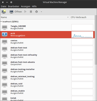

virt-manager
Dieser Artikel wurde für die folgenden Ubuntu-Versionen getestet:
Ubuntu 14.04 Trusty Tahr
Zum Verständnis dieses Artikels sind folgende Seiten hilfreich:
Der Virtual Machine Manager  , kurz auch virt-manager oder VMM genannt, bietet eine einheitliche Benutzeroberfläche zum Erstellen und Verwalten von virtuellen Maschinen. VMM setzt dabei auf libvirt auf, d.h. es werden die Virtualisierung-Lösungen unterstützt, die libvirt auch unterstützt. Dies sind u.a. QEMU, KVM, und Xen, aber nicht VirtualBox oder VMware Player.
, kurz auch virt-manager oder VMM genannt, bietet eine einheitliche Benutzeroberfläche zum Erstellen und Verwalten von virtuellen Maschinen. VMM setzt dabei auf libvirt auf, d.h. es werden die Virtualisierung-Lösungen unterstützt, die libvirt auch unterstützt. Dies sind u.a. QEMU, KVM, und Xen, aber nicht VirtualBox oder VMware Player.
VMM bietet sowohl ein grafische Benutzeroberfläche als auch eine Reihe von Kommandozeilen-Programmen an. VMM ist komplett in Python geschrieben.
Die Besonderheit an VMM ist, dass er eine Art Zwischenschicht bildet, so dass die Verwaltung der virtuellen Maschinen einheitlich ist, egal welche Virtualisierungslösung eingesetzt wird, was den Administrationsaufwand verringert. Die Konfiguration wird dabei in XML-Dateien abgelegt, so dass dies nach Bedarf auch von Hand korrigiert werden kann. Die Verwalteten virtuellen Maschinen können dabei auch auf einem anderen Rechner liegen (z.B. einem anderen Server), die Verbindung dorthin kann auch verschlüsselt erfolgen.
Installation¶
Es müssen folgende Pakete installiert werden [1]:
virt-manager
 mit apturl
mit apturl
Paketliste zum Kopieren:
sudo apt-get install virt-manager
sudo aptitude install virt-manager
Und natürlich muss mindestens eine der oben genannten Virtualisierungslösungen installiert sein.
Vorbereitungen¶
Nach der Installation sind noch folgende Punkte zu erledigen, sonst kann VMM nicht genutzt werden. Man muss sich selbst der Benutzergruppe libvirtd hinzufügen, ebenso alle anderen Nutzer, die mit VMM neue virtuelle Maschinen erstellen und verwalten können soll, und - eventuell - das Netzwerk einrichten.
Benutzer hinzufügen¶
Bei der Installation legt libvirt-bin eine eigene Gruppe an, diese heißt libvirtd. Dieser Gruppe muss man alle Benutzer hinzufügen, die VMM nutzen sollen.
Netzwerk einrichten¶
Es gibt mehrere Möglichkeiten, später die virtuelle Maschine mit ein realen Netzwerk / Internet zu verbinden. Per Voreinstellung setzt VMM ein virtuelles Netzwerk im Adressraum 192.168.122.0/24 ein, dass per NAT mit der realen Netzwerkkarte verbunden ist. Mit dieser Konfiguration kann jede virtuelle Maschine ins Internet, es sind keine weiteren Schritte notwendig.
Grundsätzlich besteht auch die Möglichkeit, dass die virtuelle Maschine sich per Bridge direkt in das reale Netzwerk einklinkt. Dazu muss aber zuerst die Bridge eingerichtet werden, was etwas Handarbeit erfordert. Ein entsprechende Anleitung findet man im Englischen Wiki KvmWithBridge oder auch im libvirt-Wiki
Spice statt VNC¶
Damit Grafik in virtuellen Maschinen funktioniert, muss KVM bzw. das zugrunde liegende QEMU-System der virtuellen Maschine einen Grafikadapter zur Verfügung stellen. Standardmäßig wird hierfür eine uralte Cirrus-Grafikkarte emuliert. Die maximale Auflösung beträgt allerdings magere 1024x768 Pixel. Wenn man höhere Auflösungen wünscht, stehen auch andere virtuelle Grafikkarten zur Auswahl, die in Linux-Gästen aber oft eine manuelle X-Konfiguration voraussetzen.
Zu guter Letzt stellt sich noch die Frage, über welches Protokoll die Grafikdaten von der virtuellen Maschine zum Client-Rechner kommen. Üblich ist hierfür das Protokoll VNC, das über die Linux-Welt hinaus weite Verbreitung findet und in der Praxis die geringsten Probleme bereitet. Alternativ dazu verspricht das neue Protokoll Spice nicht nur eine höhere Geschwindigkeit, höhere Auflösungen, sondern hat zudem den Vorteil der Audio-Unterstützung und einige weitere Zusatzfunktionen (siehe auch Virtuelle Maschinen mittels VNC und Spice bedienen  ).
).
Spice¶
Das Simple Protocol for Independent Computing Environments (kurz Spice) ist ein neues Protokoll, um das Grafiksystem einer virtuellen Maschine über ein Netzwerk effizient zu bedienen. Spice unterstützt die Komprimierung von Bildern, Video-Streaming, die Übertragung von Audio-Daten, Verschlüsselung (OpenSSL) und einiges mehr. Die Kommunikation zwischen dem Host- und Gastsystem erfolgt über "Virtual Device Interfaces" (VDIs). Gleichzeitig ermöglicht der Einsatz von Spice nahezu beliebig hohe Grafikauflösungen innerhalb der virtuellen Maschine.
Im Vergleich zu VNC ist Spice nicht nur effizienter, sondern hat zudem den Vorteil der Audio-Unterstützung. Wenn man die Audio-Ausgaben einer virtuellen Maschine hören möchten, führt an Spice momentan kein Weg vorbei. VNC sieht zwar auch die Weitergabe von Audio-Daten vor, die unter Linux verfügbaren VNC-Clients sind aber dazu nicht in der Lage.
Spice wurde ursprünglich wie KVM von der Firma Qumranet entwickelt. Nachdem Red Hat 2008 Qumranet erworben hatte, wurde Spice Ende 2009 als Open-Source-Projekt freigegeben. Das Projekt ist prinzipiell unabhängig von KVM, kommt momentan aber nur in Kombination mit KVM beziehungsweise QEMU zur Anwendung. Technologisch weist Spice Ähnlichkeiten zu den Virtio-Treibern auf: Auch Spice setzt voraus, dass in den virtuellen Maschinen paravirtualisierte Treiber zum Einsatz kommen.
Spice besteht aus drei Komponenten:
Der Spice-Server ist direkt in QEMU/KVM integriert. Er ist für die Kommunikation nach außen zuständig, also für die Steuerung der virtuellen Maschine durch den Benutzer über eine Netzwerk-Verbindung. Für die virtuelle Maschine sieht der Spice-Server wie eine VGA-Grafikkarte aus.
Der Spice-Client (bei aktuellen Distributionen das Paket python-spice-client-gtk, bei älteren Distributionen das Kommando spicec aus dem Paket spice-client) ist ein mit einem VNC-Viewer vergleichbares Programm, dass das Grafiksystem der virtuellen Maschine in einem Fenster anzeigt. Aktuelle Versionen des VMM sind ebenfalls Spice-kompatibel. Der Spice-Client ist auch als Windows-Programm verfügbar.
Der QXL-Treiber wird in der virtuellen Maschine installiert und stellt sicher, dass die virtuelle Maschine das Grafiksystem effizient und in hohen Auflösungen benutzen kann. Der QXL-Treiber steht momentan sowohl für das X-System (Linux) als auch für Windows zur Verfügung. Spice funktioniert prinzipiell auch ohne den QXL-Treiber, allerdings sind in der virtuellen Maschine dann nur Auflösungen von bis zu 1024 mal 768 Pixel möglich. Außerdem bietet Spice dann keinen Geschwindigkeitsvorteil im Vergleich zu anderen Grafiklösungen.
Mit aktuellen Versionen von Ubuntu, RHEL oder Fedora kann man Spice direkt mit dem VMM nutzen: Dazu stellt man im Dialog "Anzeige" die Detailansicht "Typ = Spice" ein. Außerdem muss man im Dialog "Video" die Einstellung "Modell = qxl" vornehmen. Nach dem Start wird das Grafiksystem wie bisher im Konsolenfenster des Virtual Machine Managers angezeigt. Rein optisch wird man also keinen Unterschied zu VNC bemerken.
Der in den VMM standardmäßig integrierte VNC-Client überträgt Tastatureingaben in Form von RAW-Codes. Sofern im Host- und im Gastsystem dasselbe Tastaturlayout eingestellt ist, gibt es keine Probleme mit dem Tastaturlayout. Spice hingegen überträgt Tastatureingaben immer gemäß dem US-Layout. Um die daraus resultierenden Probleme zu lösen, kann in der Detailansicht des VMMs (Dialog "Anzeige") das gewünschte Tastaturlayout angegeben werden. Es ist in der XML-Datei der virtuellen Maschine gespeichert (Attribut "keymap"):
# in /etc/libvirt/qemu/my_vmname.xml ... <graphics type='spice' port='-1' autoport='yes' keymap='de'/>
Damit QXL vom Gast optimal unterstützt wird, muss dort ein QXL-Treiber zur Verfügung stehen. Bei aktuellen Linux-Distributionen ist dies oft standardmäßig der Fall. Bei manchen Linux-Distributionen muss man das QXL-Treiberpaket selbst installieren (Paketname zum Beispiel spice-vdagent). Für Windows und als Linux-Quellcode kann man es von der Spice-Projektseite runterladen.
Experten-Info:
VMM aus den offiziellen Paketquellen unterstützt "out of the box" keine Spice-Verbindungen. Auf der grafischen Konsole steht schlicht: "No module named SpiceClientGtk". Der Fehler ist bekannt: Im Paket fehlt eine Abhängigkeit. Diese muss nachinstalliert werden:
python-spice-client-gtk (universe)
mit apturl
Paketliste zum Kopieren:
sudo apt-get install python-spice-client-gtk
sudo aptitude install python-spice-client-gtk
Benutzung¶
Wie bereits oben erwähnt besteht VMM aus einer grafischen Benutzeroberfläche und mehreren Kommandozeilen-Programmen.
Grafische Benutzeroberfläche¶
 Diese kann man unter GNOME über "Anwendungen -> Systemwerkzeuge -> Virtual Machine Manager" starten.
Nach dem Start erscheint ein Übersichtsfenster, welches alle installierten bzw. unter Verwaltung stehenden virtuellen Maschinen zeigt.
Im Ansichtsfenster sieht man auch den Status, wo die Maschine liegt etc. Die Ansicht kann über das Menü "View" angepasst werden.
Mit anderen Rechnern verbinden¶
Wie oben bereits erwähnt kann VMM auch virtuelle Maschinen auf anderen Rechner verwalten. Um sich mit diesem zu verbinden, klickt man auf "File -> Open Connection". Hier besteht die Wahl zwischen einer SSH-verschlüsselten Verbindung und Absicherung über ein x509-Zertifikat. Natürlich müssen für beide Methode die entsprechenden Konfigurationen vorher angelegt sein. Weitere Informationen, auch zur Einrichtung und zu Vor- und Nachteilen der Methoden, findet man im VMM-Wiki .
Hinweis:
Damit die Administration auf anderen Rechner funktioniert, muss dort auch libvirt-bin installiert sein und der Remote-Benutzer muss dort auch Mitglied der Gruppe libvirtd sein.
Neue virtuelle Maschine einrichten¶
Achtung!
Verwendet man virt-manager zusammen mit QEMU, so ist das Anlegen virtueller Maschinen nur möglich, indem man die qemu://system-Instanz benutzt. virt-manager zeigt standardmäßig nur qemu://session an, wo das Anlegen neuer VMs nur als root möglich ist. Möchte man virtuelle Maschinen anlegen, so sollte man zu "Datei -> Add Connection" navigieren, und als Hypervisor "QEMU/KVM" sowie die Art der Verbindung - z.B "Lokal" - auswählen und sich so zu QEMU verbinden. Siehe 405388.
Zum Anlegen einer neue virtuellen Maschine wählt man im Hauptfenster den gewünscht Host (z.B. localhost) und klickt anschließend auf "Neu". Nun wird man in einem sieben-schrittigen Dialog durch das Anlegen der virtuellen Maschine geführt. Als erstes legt man den Namen der virtuellen Maschine fest. Dieser kann beliebig vergeben werden. Im zweiten Schritt wählt man die Art der Virtualisierung aus, d.h. welche Technologie zum Einsatz kommt. Je nach installiertem Virtualisierer stehen nicht alle Auswahlpunkte zur Verfügung. Wichtig ist, dass man - sofern anwählbar - den Haken bei "Enable Kernel / Hardware Virtualization" setzt, weil sonst nur eine Emulation stattfindet, die sehr langsam ist.
Im dritten Schritt wählt man, ob man von einem ISO-Image, von einer CD/DVD oder via PXE-Netboot installieren will. Das ISO-Image bzw. die CD müssen dabei nicht unbedingt auf dem lokalen Rechner liegen - sie müssen lediglich auf einem Laufwerk liegen, auf das man Zugriff hat. Weiterhin wird im dritten Schritt die Art des installierten Betriebssystems gewählt. Dies hat einen gewissen Einfluss auf die Art, wie die virtuelle Maschine konfiguriert wird. Die virtuelle Maschine wird über "OS Type" und "OS Variant" definiert.
Hinweis:
Kommt es bei der Installation von Linux-Varianten zu Problemen bzw. hängt sich die Installation auf, so kann man versuchen, unter "OS Variant" eine allgemeinere Variante zu wählen also z.B. Generic 2.6.x Kernel" statt "Ubuntu Precise".
Bei Windows Installation sollte man immer die korrekte Variante wählen, da hier dann die spezifischen Besonderheiten der verschiedenen Windows-Versionen berücksichtigt werden (z.B. in Bezug auf ACPI).
Im vierten Schritt legt man fest, in welches (virtuelle) Laufwerk die Installation erfolgen soll. Dies kann entweder eine komplette Partition sein ("Normal Disk Partition") oder eine Datei ("Simple File"). Bei der Datei kann man noch festlegen, wie groß diese sein soll und ob die Datei direkt komplett anglegt wird oder dynamisch wachsen soll. Auch in diesem Schritt gilt, dass weder die Partition noch die Datei auf der lokalen Maschine liegen müssen, es können auch andere, externe Laufwerke sein, auf die man Zugriff hat. Es ist grundsätzlich auch möglich, eine VM ohne virtuelle Harddisk anzulegen, allerdings nur über die Konsole mit Hilfe von virt-install.
Im fünften legt man die Netzwerk-Einstellung fest. Je nach Vorbereitung stehen hier nicht alle Optionen zur Verfügung. Der Standard ist, wie oben bereits erwähnt, "Virtual Network -> Default".
Im sechsten Schritt gibt man an, wie viel RAM der virtuellen Maschine zur Verfügung stehen soll. Es wird ein Startwert und ein maximaler Wert vorgegeben. Außerdem kann man hier festlegen - sofern der Virtualisierer dies unterstützt - wie viele CPUs eine virtuelle Maschine haben soll.
Hinweis:
Der über den Wert für "VM Startup Memory" definierte Speicher wird beim Starten der virtuellen Maschine sofort alloziert, egal ob dieser komplett gebraucht wird oder nicht!
Im letzten Schritt wird nochmals eine Zusammenfassung gezeigt und ein Klick auf "Finish" startet die Installation.
Virtuelle Maschine starten und steuern¶
Startet man eine Neuinstallation, so startet die VM direkt automatisch, bereits installierte virtuelle Maschinen können von Hand gestartet werden. Dazu wählt man im Hauptfenster den Wirt, klickt dann auf die gewünschte VM und klickt nun auf "Öffnen". Nun erscheint ein neues Fenster für die VM. Ein Klick auf "Start" starte die Maschine und die Bildschirmausgabe erscheint im Fenster.
Über den Punkt "Virtual Maschine" kann man die laufende VM steuern, z.B. pausieren und beenden. Der Punkt "Destroy" entspricht dabei einem "harten" Ausschalten, also quasi so, als ob die Stromversorgung eines realen Computers unterbrochen wird. Daher sollte man diesen Punkt nur wählen, wenn die VM sich auf normalem Wege nicht mehr herunterfahren lässt.
Hardware verändern¶
Man kann mit Hilfe des virt-managers auch die Hardware der VM im Nachhinein ändern. Dazu klickt man im Hauptfenster auf die gewünscht VM und klickt dann auf den Reiter "Hardware". In der Liste kann man nun eine Hardware-Komponente auswählen und - falls möglich - deren Eigenschaften ändern. Über die Schaltflächen "Hinzufügen" und "Entfernen" kann man Hardware-Komponenten "ein-" bzw. "ausbauen".
Die Änderungen sind teilweise auch im laufenden Betrieb möglich.
Tastaturkommandos senden¶
Sehr praktisch ist die Funktion, Tastaturkommandos zu senden, besonders wenn diese normalerweise der "Hotkey" des Virtualisierers ist. So ist es mit QEMU / KVM normalerweise nicht möglich Strg + Alt + F1 etc. zu senden, da mit Strg + Alt der Fokus des Virtualisierers verlassen wird. Alle Tastenkombinationen, die gesendet werden können, findet man im Menü "Send key".
Austauschverzeichnis zwischen Host und Gast einrichten¶
 Davon ausgehend dass beide Systeme Ubuntu verwenden, muss zunächst im Virt Manager ein Verzeichnis auf Hostseite angegeben werden wie im Bildschirmfoto zu sehen. Hierzu muss das Gastsystem ausgeschaltet sein. Nach dem Einschalten des Gastes muss zunächst ein Verzeichnis als Einhängepunkt erstellt werden und anschließend kann das angegebene Verzeichnis eingebunden werden. Auf der Kommandozeile wären für das angegebene Beispiel folgende Befehle nötig:
Davon ausgehend dass beide Systeme Ubuntu verwenden, muss zunächst im Virt Manager ein Verzeichnis auf Hostseite angegeben werden wie im Bildschirmfoto zu sehen. Hierzu muss das Gastsystem ausgeschaltet sein. Nach dem Einschalten des Gastes muss zunächst ein Verzeichnis als Einhängepunkt erstellt werden und anschließend kann das angegebene Verzeichnis eingebunden werden. Auf der Kommandozeile wären für das angegebene Beispiel folgende Befehle nötig:
1 2 | $ mkdir /tmp/share $ sudo mount -t 9p -o trans=virtio,version=9p2000.L /share /tmp/share |
Kommandozeile¶
Bei der Installation von VMM werden drei Kommandozeilen-Programme mit installiert, welche ebenfalls der Verwaltung von virtuellen Maschinen dienen:
Virt-image¶
Mit Hilfe dieses Programm ist es möglich, eine neue virtuelle Maschine für den VMM anzulegen. Anlegen heißt in hier, dass eigentlich "nur" die XML-Datei angelegt wird, die die virtuelle Maschine beschreibt, für die Installation ist virt-install zuständig. Die XML-Datei findet man dann unter /etc/libvirt/<VIRTUALISIERUNG>, also z.B. /etc/libvirt/QEMU, wenn QEMU eingesetzt wird.
virt-image kann mit einer Reihe von Optionen aufgerufen werden, welche die Konfiguration der virtuellen Maschine definieren. Diese sind recht ausführlich in der Man-Page von virt-image inkl. einiger Beispiel beschrieben.
Virt-install¶
virt-install dient der Installation von neuen virtuellen Maschinen für VMM. Die Optionen entsprechen denen der grafischen Benutzeroberfläche und sind sehr ausführlich in der Man-Page inkl. einiger Beispiele beschrieben. Einige Optionen entsprechen denen von virt-image. virt-install kann direkt ausgeführt werden, es muss vorher kein Image via virt-image angelegt werden.
VM für Live-CD¶
Wie weiter oben bereits erwähnt ist es mit Hilfe der grafischen Benutzeroberfläche nicht möglich, virtuelle Maschinen ohne virtuelle Harddisk zu erstellen. Dies kann dann z.B. gewünscht sein, wenn man eine Live-CD in einer VM laufen lassen möchte.
Der folgende Aufruf von virt-install erzeugt eine entsprechende virtuelle Maschine [2]:
sudo virt-install --hvm --name JuxLaLa --ram 384 --nodisks --livecd --vnc --cdrom /media/daten_ntfs/virtuelle_laufwerke/JUXlala_2.0.iso --network network:default
In der Regel wird man trotzdem nach einer Harddisk und deren Größe gefragt. Hier gibt man dann als HD None ein und als Größe 0. Alle Optionen sind in der Manpage erklärt.
Virt-clone¶
Wie der Name schon vermuten lässt, dient dieses Programm dem Klonen von vorhanden virtuellen Maschinen. Dabei werden alle Parameter übernommen. Die Parameter, welche einmalig sein müssen (z.B. die UUID der virtuellen Maschine oder die MAC-Adresse der Netzwerkkarte) ersetzt virt-clone selbstständig. Ein Übersicht über alle Optionen von virt-clone findet man nach dem Aufruf von virt-clone -h oder in den Man-Pages, in denen auch einige Beispiele enthalten sind.
Problemlösung¶
Kein Netzwerk trotz "default"-Einstellung¶
Hat die virtuellen Maschine keine Netzwerkverbindung, so kann das daran liegen, dass die genutzte virtuelle Schnittstelle vnet0 von NetworkManager nicht korrekt konfiguriert wird. Dies kann man recht einfach beheben, in dem man in der Datei /etc/network/interfaces folgende Zeile einfügt [4]:
iface vnet0 inet manual
Zwischenablage funktioniert nicht¶
Zunächst muss sichergestellt werden, dass im VMM als Anzeige Spice mit Video QXL konfiguriert ist. Weiterhin muss dann in der virtuellen Maschine das Paket spice-vdagent installiert werden.[1] Siehe auch: https://unix.stackexchange.com/questions/109117/virt-manager-copy-paste-functionality-to-the-vm
Links¶
Das Verwalten von Gästen mit dem Virtual Machine Manager
- Fedora DokumentationVirtuelle Maschinen mittels VNC und Spice bedienen
- Michael Kofler, ADMIN MagazinExample using SPICE and QXL for improved Graphics experience in the guest
- RedHat Emerging Technology Project
- Erstellt mit Inyoka
-
 2004 – 2017 ubuntuusers.de • Einige Rechte vorbehalten
2004 – 2017 ubuntuusers.de • Einige Rechte vorbehalten
Lizenz • Kontakt • Datenschutz • Impressum • Serverstatus -
Serverhousing gespendet von